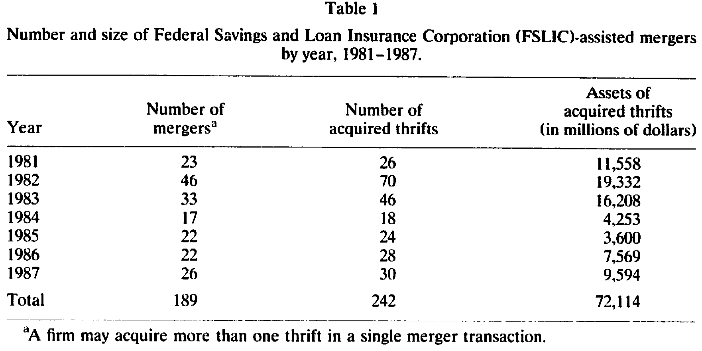
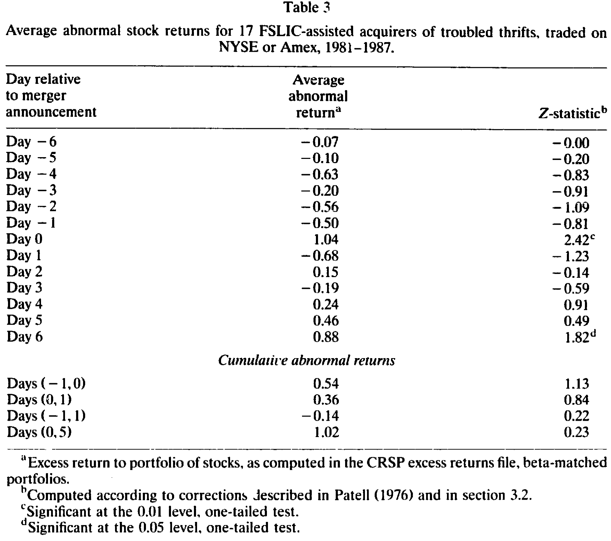
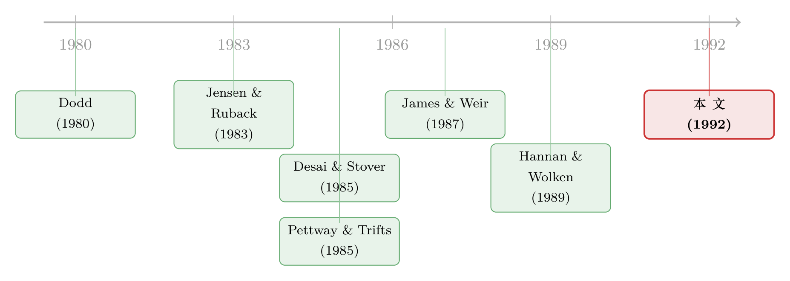

政府的『甩卖』：当一家倒闭储贷社的接盘人，悄悄赚走了纳税人的钱
本文读的是 Balbirer, Jud & Lindahl (1992, JFE)：在 1980 年代美国储贷危机中，由联邦监管机构 FSLIC 安排并补贴的「问题储贷社」并购里，收购方股东在公告日平均获得 1.04% 的显著正超额收益（Z = 2.42）。这与几乎所有「收购方赚不到钱」的并购研究相反，作者把它读成一个信号：监管者很可能对收购方补贴过头了。
1 引言：一场被叫作「甩卖」的并购
先讲一个常识。
过去二十年的并购研究，几乎众口一词地告诉我们一件事：被收购方（target）的股东赚得盆满钵满，收购方（acquirer）的股东什么也捞不到。这背后的逻辑很干净——如果收购市场是充分竞争的，那么胜出的那个报价必然已经把并购的全部好处（协同、改善管理）都吐了出来，收购方股东的财富因此纹丝不动，所有的蛋糕都被卖方拿走。Jensen 和 Ruback (1983) 那篇著名的综述，正是把这一条写成了「科学证据」。
可如果有一天，蛋糕不是被一个竞争市场切的，而是被政府切的呢？
1980 年代的美国储贷业（savings and loan，俗称 thrift）正经历一场公开的灾难。利率剧烈波动、又普遍走高，把这个「短借长贷」的行业整体推到了悬崖边——成百上千家机构资不抵债。从 1981 到 1987 年，联邦住房贷款银行委员会（FHLBB）监管了 450 多起问题储贷社的合并，而联邦储贷保险公司（Federal Savings and Loan Insurance Corporation, FSLIC）则亲手安排、并且在大多数情形下出钱补贴了对 242 家倒闭机构的收购。
于是《华尔街日报》在头版打出了一个刺眼的标题：Are Big S&L Rescues Giveaways to Buyers?（这些大手笔的储贷救助，是不是在白送给买家？）有评论说，FSLIC 在搞一场「甩卖」（fire sale）。
「甩卖」这个词其实暗含了两个很强的假设：(1) 倒闭储贷社的并购市场既不竞争、也无效率；(2) 一家倒闭储贷社作为「持续经营实体」（going concern）的价值，主要流向了收购方，而不是 FSLIC。
这篇论文要追问的，正是这件事：在这个由政府出钱撮合的特殊市场里，财富到底是怎么分的？
2 为什么这个问题值得问
接着，一个自然的问题是：既然并购研究已经做了二十年，为什么偏偏没人系统地研究过储贷业？
作者给了两个很实在的理由。第一，直到 1980 年以前，绝大多数储贷社还是互助制组织（mutual organizations）——它们没有股东，由储户按存款比例「共同拥有」，根本不公开交易，也就没有股权收益的数据。第二，也正是行业那场众所周知的危机，才头一次制造出足够多「健康机构被迫接盘问题机构」的强制合并样本，让系统研究成为可能。
更要紧的是，这个市场的「定价机制」和普通并购完全不同。这里没有公开的竞价战，谈判是在公众视线之外进行的，有时 FSLIC 甚至只能和一两个潜在买家私下磋商。政府补贴的注入，凭空创造出一种可能性：财富从政府（最终是纳税人）转移到收购方股东手里。
这正是这篇论文「独一无二」的地方：(a) 并购是由政府监管者安排并补贴的；(b) 它们集中发生在一个单一的、且陷入公开财务困境的行业里。把这两点放在一起，「收购方赚不到钱」这条铁律，第一次有了被证伪的土壤。
3 监管的舞台：FSLIC 怎样处理一家倒闭的储贷社
要看懂结果，得先看懂规则。
当 FSLIC 认定一家投保储贷社已经资不抵债，它手里只有两条路。一是直接关门：赔付投保储户，清算资产。二是撮合并购：邀请健康机构来竞购这家倒闭储贷社的资产（或其中一部分），并接管它的存款——这叫「购买与承接」（purchase and assumption）。
撮合并购里又分两种。有时 FSLIC 不用补贴就能促成（监管性合并，supervisory merger）；有时则必须掏钱才能吸引到买家（援助性合并，assisted merger）。而在援助性合并里，胜出者是那个要求补贴最少的竞标者。
补贴可以是现金转移，也可以是对目标储贷社未来贷款损失的或有补偿（contingent indemnification）。法律要求 FSLIC 必须选择那个让保险基金损失最小的方案——它会同时估算机构「持续经营」的价值和「清算」的价值，再据此决定要不要补、补多少。FHLBB 的新闻稿会公布补贴的金额，但对补贴的形式只字不提。
这里藏着一个微妙的张力。理论上，竞争应该把补贴一路压到「让收购方刚好回到市场回报率」的那个点。可现实里有三股力量在把天平往收购方那边压：
- 倒闭储贷社越积越多，监管者面对的压力越来越大——为了赶紧解决一个、好腾出手去处理下一个，他们可能在援助条款上过于慷慨；
- 谈判在「公众视线之外」进行，政府拿到最高价的可能性本就被削弱了；
- 更要命的，如果保险基金自己都缺钱，「关门清算」这个备选项就形同虚设——一旦失去了可信的替代方案（参见 Brumbaugh et al. 1989；Romer & Weingast 1990），监管者在谈判桌上的议价地位极弱，收购方要多少补贴，几乎只能给多少。
作者把由此引出的核心命题，叫作过度补贴假说（oversubsidization hypothesis）。
但作者非常克制地提醒：股价溢价 不等于 过度补贴。补贴超过竞争水平，钱也可能流进了收购方经理人的口袋（《华尔街日报》报道过某家新合并储贷社 CEO 拿 100 万美元年薪），或者被支付给安排并购的顾问、消耗在交易成本里。反过来，即便没有过度补贴，少数买家的市场势力 + 真实的协同（跨州经营的「特许权价值」、规模经济），也足以给收购方造出租金。「过度补贴」对收购方的正收益，既非必要、也非充分条件。 数据能干净识别的，只有「收购方股东的财富变化」这一件事——他们也老实承认了这一点。
4 数据：从 242 家倒闭储贷社里，筛出 17 + 21 家
作者的起点，是 1981 年 1 月 1 日到 1987 年 12 月 31 日之间、189 起涉及 242 家储贷社的 FSLIC 援助性并购的完整名单（合并数少于储贷社数，是因为 FSLIC 习惯把几家小机构「打包」给一个买家——比如 H.F. Ahmanson 在 1982 年 1 月 15 日一口气买下六家小储贷社，只算一起）。如表 1 所示，将近一半的援助性并购集中在 1982 和 1983 两年，主要源于 1980 年代初的「通胀—衰退」周期；西南部房地产市场崩盘的影响，则反映在更晚的那批合并里。

Table 1
接下来是一连串筛选，每一步都很关键：
- 被收购的储贷社里，
77%（187 家）是互助制；收购方里也有46%（90 家）是互助制。互助制机构没有股东、不公开交易，因此这 90 家收购方被直接剔除。 - 一笔收购要进样本，必须满足：(1) 收购方是股份制组织；(2) 在 CRSP 的交易所文件（NYSE/Amex）或 OTC 文件（NASDAQ）里能找到相应日期的股票收益。
最后，剔除同一天的重复观测和「当天没有交易」的公司后，剩下 17 个交易所并购事件 + 21 个 OTC 并购事件；由于同一家公司在不同日期做过多笔收购，最终样本归结为 27 家收购公司。
这里有一个贯穿全文的方法论决定：交易所样本和 OTC 样本被分开分析。原因有二。其一，两组在规模上天差地别——交易所收购方平均资产 217 亿美元（被 Citicorp 拉得极偏，均值差不多是中位数的四倍），而 OTC 收购方只有 31 亿美元，甚至比被排除样本的平均 43 亿还小。其二，收购规模相对收购方的占比也不同：交易所样本里被收购方/收购方资产的均值和中位数是 10% 和 3%，OTC 则高达 21% 和 15%。
这个细节后面会还魂：如果说越大的收购越是「重大估值事件」，那我们更可能在 OTC 样本里看到显著的市场价值效应。 换句话说，OTC 这组「小公司买大资产」的结构，恰恰是检验过度补贴的更敏感的实验台。
还有一条耐人寻味的线索：样本里有强烈的跨州倾向——28 起交易所合并里有 22 起、29 起 OTC 合并里有 21 起是跨州的。在那个州法律常常让跨州揽储变得昂贵甚至不可能的年代，买下一家倒闭储贷社，是获得跨州存款基础（「跨州银行特许权」）的有效途径。这条线索，作者后来专门拿去做了检验。
5 识别策略：用一把「标准化残差」的尺子量公告日
那么，怎么量「财富变化」？
这是一篇标准的事件研究（event study）。作者把事件期定义为以 FHLBB 发布并购新闻稿那一天为中心、前后共 15 天的窗口。这个事件设计有一个天然的好处：由于谈判据称是秘密进行、事前不公开宣布的，这个事件不太会被其他事件污染。公告本身不仅揭示了合并意图，也同时意味着监管批准已经到手。
用事件期前的 100 天来估计超额收益的标准误。真正讲究的一步在于检验统计量：作者采用 Patell (1976) 的方法，对预测误差（即「残差」）做两重调整——既校正在估计期之外做预测带来的方差膨胀，也校正横截面上的方差差异。其核心，是把每家公司每天的超额收益除以它自己的标准误，得到「标准化超额收益」，再加总：
$$ \text{SAR}_{it} \;=\; \frac{u_{it}}{S_i\,\sqrt{\,1+\dfrac{1}{T}+\dfrac{(R_{mt}-\bar{R}_m)^2}{\sum_{t}(R_{mt}-\bar{R}_m)^2}\,}} $$
$$ Z \;=\; \frac{\sum_{i=1}^{N}\text{SAR}_{it}}{\sqrt{N}} $$
这里 \(u_{it}\) 是公司 \(i\) 在 \(t\) 日的残差，\(S_i\) 是公司 \(i\) 在估计期内超额收益的估计标准误，\(R_{mt}\) 是市场收益、\(\bar{R}_m\) 是估计期内 \(T\) 天的平均市场收益，\(N\) 是公司数。分母里那个 \(\frac{1}{T}+\frac{(R_{mt}-\bar{R}_m)^2}{\sum (R_{mt}-\bar{R}_m)^2}\) 的项，正是「在回归区间之外做预测」所带来的方差增量——离样本均值越远的市场行情，预测越不确定，这个修正就越大。如此构造出的 \(Z\) 在大样本下渐近服从标准正态分布。
为什么要这么费劲？因为关键的检验是单尾的。作者的逻辑是：潜在收购方不可能被「胁迫」去做一笔负 NPV 的投资——没人能逼你去亏钱接盘。所以原假设是「超额收益非正」，备择假设是「严格为正」。一旦能在单尾下拒绝，就意味着收购方确实从这些政府撮合的并购里赚到了钱。
6 主要结果：那 1.04% 的「反常」
于是反转出现了。
如表 3 所示，对 17 家交易所收购方，FHLBB 新闻稿发布当天（Day 0）的平均超额收益是 1.04%，对应的 Z = 2.42，在 0.01 水平上拒绝了「超额收益非正」的原假设。也就是说，市场把这些并购公告，视为对收购方有利的消息。

Table 3
几个值得细看的地方：
- 收益是「干净」地砸在公告日的。事件期里其他日子的平均收益、以及各种累积超额收益（如 Days(−1,0) 的
0.54%、Z=1.13），都不显著——没有泄密、没有市场提前反应、也没有事后的漫长调整。消息来得快，价格反应也快。这与有效市场的图景一致。 - 结果不是被极端值带歪的。作者补做了非参数检验：事件日的 t 统计量是
1.46，在常规水平上不显著；但 17 家公司里有 12 家在事件日录得正收益——参数检验的结论并非由离群点造成。 - 绝对量级虽小，但要放在背景里读：表 2 显示这些交易所收购相对收购方本就很小（中位数仅占收购方资产的
3%），1.04%的反应放在这个尺度上并不算微弱。
最有意思的，是它与「失败银行」研究的对照。Pettway 和 Trifts (1985) 研究 FDIC 安排的 22 起失败银行收购，发现公告前十天有 +3.3% 的累积正收益、公告后五十天却有 −6.7% 的累积负收益——后者差不多是前者的两倍，于是他们判定收购方出价过高（overbid），并把这读成竞争性定价的证据。
而本文的结果恰好相反：价格反应只集中在市场最可能收到消息的那一天，之后并没有反转下跌。按 Pettway-Trifts 的同一套逻辑，这本可以被读成「竞争失败」的证据——并购过程没能把目标公司的价值榨干。但作者很谨慎，拒绝下这个强结论：因为即便市场充分竞争，只要那些落败的竞标者在胜出价上本来就会亏钱，收购方仍然可以拿到正收益（这正是 Ruback 1983 指出的道理）。可惜数据里没有落败竞标的信息，也无法像 James & Weir (1987) 那样去检验「超额收益与潜在竞标者数量的负相关」。
论文后半段（表 4–7、以及图 1–2 所揭示的 OTC 股票「极度稀薄交易」问题）进一步分析了 OTC 样本、用「超额收益 × 收购前市值」算出的总财富增加、财富效应的横截面差异（有证据显示相对越大的收购、收益越大），并检验、但未能支持「跨州存款基础特许权」这个解释。受所给正文截断所限，这几张表的具体系数此处不逐一展开——但主线已经清楚：在这个政府出钱的市场里，收购方股东确实赚到了「不该赚到」的钱。
7 文献脉络
把这篇论文放回它生长的那条藤上，故事会更清楚。
第一段，是非金融企业并购的二十年积累：Halpern (1973)、Mandelker (1974)、Dodd (1980)，到 Jensen 与 Ruback (1983) 的综述，凝结成那条「收购方赚不到钱、卖方拿走全部蛋糕」的共识；Roll (1986) 的「自负假说」（hubris hypothesis）则从另一个角度解释卖方的超额收益——收购方是被过度自信的经理人抬上去的。
第二段，战场移到商业银行业，而这里结论开始打架。Desai & Stover (1985)、James & Weir (1987) 发现收购方有正收益，后者还发现收益与潜在竞标者数量负相关，暗示存在市场势力；但 Dubofsky & Fraser (1985)、Neely (1987)、Wall & Gup (1989) 用更晚的数据，却普遍发现收购方收益为零甚至为负——Dubofsky-Fraser 把这个 1980 年前后的「翻转」归因于一纸放松美联储并购限制的法院裁决，扩大了潜在买家的池子。Hannan & Wolken (1989) 更进一步发现收购方股东遭受了显著且不小的损失。

第三段，聚焦「问题机构」。Pettway & Trifts (1985) 研究 FDIC 安排的失败银行收购，得出「出价过高」的结论。本文正站在这一段的延长线上——但它把镜头第一次对准了储贷业，并且引入了那个商业银行研究里没有的关键变量：政府补贴。正是补贴的存在，让「收购方的正收益」从一个关于市场势力的问题，变成了一个关于纳税人钱袋子的问题。
（关于「政府兜底」如何系统性地改写金融机构的激励与定价，可参见《刚兑」是原罪，还是次优解？——重读中国影子银行里的隐性担保》；关于银行并购中收购方股东与经理人之间那笔暗账，可参见《并购毁了股东的钱，却肥了老板的薪——银行兼并浪潮里的一笔私人账》；而把镜头对准储贷业本身的高管薪酬，则有《同一个行业里，每家公司的『工资—业绩』曲线都长得不一样》。）
8 我的判断
先说贡献。这篇论文的价值，不在那个 1.04% 的数字有多大，而在它选了一个几乎完美的「负面对照」：在一个理论上最该「收购方赚不到钱」的竞争性逻辑之外，它找到了一个由政府定价、信息不透明、议价地位极不对称的市场，然后干净地展示出——这里的收购方确实拿到了显著的正收益。它把一个抽象的政策担忧（「FSLIC 是不是在贱卖」）翻译成了一个可证伪的资产定价命题，并诚实地划清了「能识别什么、不能识别什么」的边界。在储贷危机最终让纳税人付出数千亿美元代价的大背景下（参见 Kane 1989），这篇 1992 年的论文，是一份难得的、用市场价格写下的「现场笔记」。
再说对识别的担忧。第一，样本极小——17 + 21，而且交易所那组被 Citicorp 一家严重拉偏，非参数检验在事件日已经不显著（t = 1.46），这意味着结论的稳健性是脆弱的。第二，也是最根本的，作者自己反复强调过：正收益不等于过度补贴。市场势力 + 真实协同（跨州特许权、规模经济）同样能产生租金，而论文恰恰未能支持那个跨州特许权的解释，这让「到底是补贴过头、还是协同为真」始终悬而未决。第三，事件窗口依赖于「公告日就是信息到达日」这个假设，可这些机构的 OTC 交易极度稀薄（图 1、图 2 显示大量「零成交」的交易日），价格本身可能反应迟滞，把公告日的反应低估了。
最后，后续想看到什么。我最想知道的，是把「补贴金额」这个 FHLBB 新闻稿里明确公布的变量，直接拿来和超额收益做横截面回归——如果补贴越高、收购方超额收益越大，那「过度补贴」就不再只是一个假说，而有了直接的剂量—反应证据。其次，能不能找到落败竞标者的信息，去复刻 James-Weir 的「竞标者数量」检验，从而把「市场势力」从「过度补贴」里剥出来。这两件事，正是这篇论文受困于 1990 年代数据可得性而没能做、却最值得今天用更完整的监管档案去补上的。
评论与延伸（Q&A + 研究方向）
(a) 几个可能的疑问
Q：收购方拿到正收益，不就直接证明了 FSLIC「补贴过头」吗？
不能直接这么说，这也是作者最克制的地方。正的股价反应至少有三种来源：监管者过度补贴、少数买家的市场势力、以及真实的协同效应（跨州特许权、规模经济）。三者会同时抬高收购方股价，单凭事件研究无法分开。论文只能识别「收购方股东的财富变化」，识别不了「钱具体从谁口袋转到谁口袋」。
Q：那为什么作者还是倾向「过度补贴」的解读？
因为他们检验、却未能支持那个最自然的协同解释——「跨州存款基础特许权」。协同假说的一个候选被排除后，再叠加监管者在秘密谈判、保险基金枯竭、时间压力下议价地位极弱这一整套制度背景，「补贴过头」就成了相对更可信的剩余解释。但这是推断，不是证明。
Q：为什么要把交易所样本和 OTC 样本分开做？这是不是在「挑数据」？
不是挑数据，而是两组在经济结构上确实不同：交易所收购方平均资产 217 亿、收购只占其资产 3%（中位数），而 OTC 收购方只有 31 亿、收购占比高达 15%。加之 OTC 股票交易极度稀薄（图 1、图 2）、收益序列性质不同。把「小公司买大资产」的 OTC 单列，反而是更敏感、也更诚实的做法。
Q：1.04% 这么小，值得当回事吗？
要放回尺度看。这些交易所收购的中位规模只占收购方资产的 3%，对这么小的事件，1.04% 的当日反应并不弱；而且 Z = 2.42 在 0.01 水平显著、17 家中 12 家为正、收益干净地集中在公告日而无前后泄漏。真正脆弱的是非参数检验（t = 1.46 不显著）和样本量本身。
Q：和 Pettway-Trifts (1985) 的失败银行结论相反，是不是哪边错了？
不一定有谁错。Pettway-Trifts 看到公告后 50 天 −6.7% 的反转，判定收购方「出价过高」；本文看到反应只集中在公告日、之后不反转。差异可能来自机构类型（银行 vs 储贷）、监管者（FDIC vs FSLIC）、时期，以及储贷社更稀薄的交易。作者明确拒绝从「无反转」直接推出「竞争失败」的强结论。
Q：互助制机构占了被收购方的 77%，把它们剔除会不会让样本不具代表性？
这是无法回避的选择偏误来源。互助制没有股东、不公开交易，事件研究在方法上根本无法纳入它们。结论因此只适用于「由股份制公司接盘」这一子集。好在被收购的失败储贷社中互助制占比之高，反映的是整个行业的所有制结构（1981 年互助制占 FSLIC 投保机构的 74%），而非互助制更易倒闭。
(b) 几个可能的研究问题与提案
1. 用公布的补贴金额，直接给「过度补贴」做剂量—反应检验
【经济故事】FHLBB 新闻稿公布了每笔援助的补贴金额。如果补贴越高、收购方超额收益越大，那「过度补贴」就从假说升格为直接证据，并能估出「每一美元补贴里有多少漏给了收购方股东」。 【可行性】中。补贴金额可从 FHLBB 历史档案手工收集，超额收益用本文同款事件研究即可。难点在补贴的「形式」不披露（现金 vs 或有补偿，风险含义完全不同），需要从后续监管文件补全；样本量仍受限于股份制收购方。
2. 把「市场势力」从「过度补贴」里剥出来
【经济故事】沿 James & Weir (1987) 的思路，检验收购方超额收益与「潜在竞标者数量」的关系。若收益随竞标者增多而下降，说明驱动因素是市场势力而非纯补贴。 【可行性】低到中。关键瓶颈是落败竞标信息——FSLIC 的竞价记录是否可得、是否完整，决定了这个设计能否落地。若 FDIC/FSLIC 的解密档案里有竞价名单，则可行性大幅提升。
3. 把同样的逻辑搬到公司债/信用市场：监管救助如何重定价债权人
【经济故事】政府补贴改写的不止股东财富，还有债权人的风险定价。被援助合并后的机构，其存量债与新发债的利差会怎么动？这把「过度补贴」从股权延伸到信用市场，与「大到不能倒」的隐性担保直接相连。 【可行性】中。需要被收购方/收购方在合并前后的债券价格或 CDS（当代样本），储贷危机年代债券数据稀薄，更适合放到 2008 年后 FDIC 援助交易的现代样本里做。可对照《刚兑是原罪还是次优解》的隐性担保框架。
4. 稀薄交易下的事件研究偏误：给「零成交」做一次方法学体检
【经济故事】图 1、图 2 显示 OTC 收购方有大量「零成交」交易日。在这种极度非流动的样本里，标准事件研究的 Z 统计量可能严重失真——这本身就是一个值得量化的方法问题。 【可行性】高。可用蒙特卡洛 + 真实稀薄交易序列，比较 Patell-Z、非参数检验、以及对非交易调整后的估计量的有限样本表现，给「小公司、稀薄交易」类事件研究提供一份偏误修正指南。
参考文献
- Brown, Stephen J. and Jerold B. Warner (1985). Using daily stock returns: The case of event studies. Journal of Financial Economics 14, 3–32.
- Desai, Anand S. and Roger D. Stover (1985). Bank holding company acquisitions, stockholder returns and regulatory uncertainty. Journal of Financial Research 8, 145–156.
- Dodd, Peter (1980). Merger proposals, management discretion, and shareholder wealth. Journal of Financial Economics 8, 105–137.
- Dubofsky, David A. and Donald R. Fraser (1985). Bank mergers and acquiring bank stockholders' returns. Eastern Finance Association meeting, Williamsburg, VA.
- Halpern, Paul J. (1973). Empirical estimates of the amount and distribution of gains to companies in mergers. Journal of Business 46, 554–575.
- Hannan, Timothy H. and John D. Wolken (1989). Returns to bidders and targets in the acquisition process: Evidence from the banking industry. Journal of Financial Services Research 3, 5–16.
- James, Christopher M. and Peggy Weir (1987). Returns to acquirers and competition in the acquisition market: The case of banking. Journal of Political Economy 95, 355–370.
- Jensen, Michael C. and Richard S. Ruback (1983). The market for corporate control: The scientific evidence. Journal of Financial Economics 11, 5–50.
- Kane, Edward J. (1989). The high cost of incompletely funding the FSLIC shortage of explicit capital. Journal of Economic Perspectives 3(4), 31–47.
- Mandelker, Gershon (1974). Risk and return: The case of merging firms. Journal of Financial Economics 1, 303–335.
- Neely, Walter P. (1987). Banking acquisitions: Acquirer and target shareholder returns. Financial Management 16(4), 66–74.
- Patell, James M. (1976). Corporate forecasts of earnings per share and stock price behavior: Empirical tests. Journal of Accounting Research 14, 246–276.
- Pettway, Richard H. and Jack W. Trifts (1985). Do banks overbid when acquiring failed banks? Financial Management 14, 5–15.
- Roll, Richard (1986). The hubris hypothesis of corporate takeovers. Journal of Business 59, 197–216.
- Ruback, Richard S. (1983). Assessing competition in the market for corporate acquisitions. Journal of Financial Economics 11, 141–153.
- Wall, Larry D. and Benton E. Gup (1989). Market valuation effects and bank acquisitions. In B. E. Gup (ed.), Bank Mergers: Current Issues and Perspectives, Kluwer, Boston, MA, 107–119.